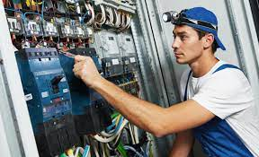
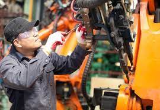
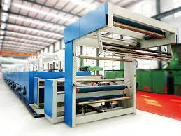

SERVICIOS
|  | SERVICIOS Llámenos tenemos un equipo de trabajo excelente y especializado en cualquier tipo de maquina industrial, mantener tus equipos en condiciones adecuadas para así permitir la buena realización de la función que deben cumplir, aumentar la productividad |
|  | MANTENIMIENTO DE MAQUINAS MANTENIMIENTO PREVENTIVO: Este mantenimiento, se realiza con el fin de prevenir posibles fallas, prolongando así el buen funcionamiento del equipo. MANTENIMIENTO PREVENTIVO:Este mantenimiento se basa en la revisión del aparato, para así determinar el estado en el cual se encuentra, permitiendo así tomar una serie de acciones que facilitan la búsqueda de anomalías para así evitar fallos más grandes. MANTENIMIENTO CORRECTIVO:El mantenimiento industrial correctivo, se realiza después de que ocurre una falla en el equipo, por ende, su fin es reparar los defectos que se presentan en la máquina. |
|  | VENTA Contamos con más de 20 años de experiencia en el comercio de máquinas de confección, lo que nos permite ser una empresa reconocida y confiable. Ofrecemos máquinas de alta calidad con una amplia garantía, altos índices de cumplimiento, los precios más competitivos en el mercado, y una excelente asesoría y seguimiento a todos nuestros clientes. |
PAGINA CREADA POR ANDRES FELIPE MENDOZA